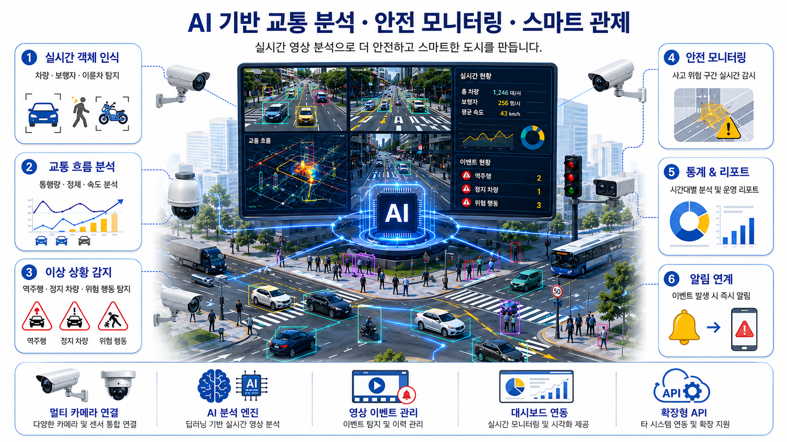
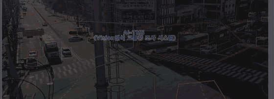

Vision AI Safety Platform
QVision
기존 CCTV 영상을 실시간으로 분석해 돌발상황과 위험 행동을 감지하고 개인정보를 즉시 비식별 처리합니다.

Overview
기존 CCTV를 교통·
기존 CCTV를 교통·안전 감지 센서로 활용합니다
카메라 영상으로 차종·
실시간 객체 인식도로 영상에서 차량·보행자·이륜차를 자동으로 구분하고 이동 상황을 확인
교통 흐름 분석차종별 통행량과 정체·속도 변화를 분석해 시간대별 교통 현황을 제공
이상·위험 상황 감지 역주행·정지 차량·포트홀·위험 행동 등 사고로 이어질 수 있는 상황을 조기에 탐지
관제·알림 연계 감지한 이벤트를 관제 화면과 담당자 알림으로 전달하고 통계와 운영 리포트로 정리
국책 주관공공안전 AI 국책과제 — 오큐브 주관·KT 수요기관
0개소세이프뱃지 안전관제 실증
0종자동 돌발상황 감지(AID) 항목
Features
영상 속 차량과 위험 상황을 실시간으로 인식합니다
카메라 영상에서 차종별 교통량을 자동으로 집계하고, 노면 파손을 실시간으로 찾아 관제로 전달합니다.
TMS
실시간 교통량 분석
도로 영상에서 차량을 검지·
- 차종별 자동 조사 지나는 차량을 종류별로 구분해 통행량 자동 집계
- 교차로 방향별 추적 교차로 진행 방향별 교통량을 구분해 집계
- 고정식·
이동식 운용 설치형과 이동형 조사 환경 모두 대응

TMS — 실시간 교통량 검출
Road Safety
실시간 포트홀 검출
주행 영상에서 포트홀을 실시간으로 찾고, 위치와 검출 정보를 관제 시스템에 전달합니다.
- 다양한 형태 대응 여러 모양과 크기의 포트홀 학습 데이터 적용
- 실시간 검출·
전송 주행 중 실시간 검출과 검출 정보 전송 - 관제·
관리 수집한 검출 정보의 관제·관리 시스템 제공

포트홀 — 실시간 검출 데모 (차량 영상 인식 · 관제 서버)
TMS · Traffic Measurement Solution
차종별 교통량을 자동으로 조사·
차종별 교통량을 자동으로 조사·통계합니다
AI Vision 기술을 이용한 차종별 교통량 자동 조사 시스템입니다.
01학습 데이터다양한 도로 환경의 학습 데이터를 바탕으로 검출 성능 고도화
02차종 구분국토교통부 기준 12차종 + 버스 = 총 13차종 구분
03방향별 추적교차로 진행 방향별 교통량 추적 검출
교통량 조사 시스템
고정식·
자동 신호등 제어
측정한 교통량 기준 신호 제어 연계
AI 주차 관제
주차면 점유·
Incident Detection
도로·
도로·현장의 위험 영상을 관제 이벤트로 전환합니다
자동 돌발상황 감지(AID)가 위험 장면을 분류해 관제에 알립니다.
역주행
정지 차량
교통 정체
보행자 진입
낙하물
저시정·연기
노면 파손(포트홀)
통행량·차종
검지 항목은 현장 요건에 맞춰 확장하며, 오탐을 줄이기 위해 사람 검수 단계를 둘 수 있습니다. 개인영상정보 비식별 처리는 현장 요건과 관련 규정에 따라 적용합니다.
오탐 억제 설계이벤트 신뢰도 점수·연속 프레임 확인·사람 검수를 거쳐 확정
야간·악천후 대응 저조도·역광·우천 환경의 검지 성능을 현장 데이터로 보정
개인영상정보 보호비식별(블러)·접근 권한 분리·보관 기한 관리로 영상정보 규정 준수
Ideal Use Cases
이런 현장에 적합합니다
이미 설치된 카메라를 더 쓰임새 있게 만들어야 하는 현장에 적합합니다.
CCTV는 있지만 사람이 계속 봐야 하는 관제실
화면 수가 많아 실시간 확인이 어렵고, 사후 확인에 그치는 환경
교통량 조사를 사람이 수행하는 구간
조사 인력과 기간이 부담인 도로·
도로 점검이 순찰에 의존하는 지역
신고 전에 찾아야 하는 포트홀·
영상정보 보호가 중요한 기관
원본을 밖으로 내보내지 않고 현장에서 비식별 처리해야 하는 환경